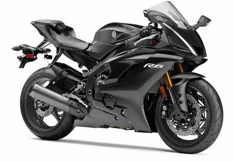

სპორტული მოტო
Kawasaki

Kawasaki Motors, Ltd. (カワサキモータース株式会社, Kawasaki Mōtāsu Kabushikigaisha) is a Japanese mobility manufacturer that produces motorcycles, all-terrain vehicles, utility vehicles, watercraft, outboard motors, and other electric products. It derives its origins from Kawasaki Aircraft Industries, a subsidiary of Kawasaki Heavy Industries, and is rooted in the motorcycle, boat, and engine businesses. In 1953, they began manufacturing engines for motorcycles and have since produced products such as the Mach and Ninja series in motorcycles and the Jet Ski, which has become a generic term for personal watercraft. Until 2021, it was a division of Kawasaki Heavy Industries, known as the Kawasaki Aerospace Company (川策重工業汎用機カンパニー) and later the Kawasaki Motorcycle & Engine Company (川崎重工業モーターサイクル&エンジンカンパニー). In 2021, it was separated as Kawasaki Motors, Ltd, a wholly owned subsidiary of Kawasaki Heavy Industries.
Yamaha
Yamaha Motor Co., Ltd. (ヤマハ発動機株式会社, Yamaha Hatsudōki Kabushiki gaisha) is a Japanese multinational conglomerate mobility manufacturer that was founded in 1955. The company operates across various industries and manufactures a wide range of motorized products, including motorcycles, motorboats, outboard motors, and semiconductor manufacturing equipment.